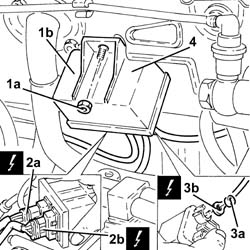

5520C20 Heater plugs CONTROL UNIT - R.R.
- Path
- Procedures > 55 ELECTRICAL EQUIPMENT > 5520 ENGINE STARTING > 5520C cold starting system (diesel engines) > 5520C20 Heater plugs CONTROL UNIT - R.R.
- Kind
- repair procedure (removal / refitting; the operation number is the code)
- Applies to
- engines: 1.9 JTD 8V; all production periods
- Interactive page
- https://sloeber94.github.io/elrnDB-fDbl/en/#/2584917
Applies to: engines: 1.9 JTD 8V; all production periods
 Removing
Removing
 Refitting
RefittingMake sure that the ignition key is in the OFF position; then disconnect the negative battery terminal.
 | Name | Connector |
|---|---|---|
- | Battery |
1. Undo the nut (1a) and lift up the heater plugs control unit (1b) as much as necessary.
2. Disconnect the electrical connections (2a) and (2b) from the heater plugs control unit.
Name | Connector | |
|---|---|---|
2a | Heater plugs controlunit |
Name | Connector | |
|---|---|---|
2b | Heater plugs controlunit |
3. Undo the nut (3a) and disconnect supply lead (3b) from the heater plugs control unit.
Name | Connector | |
|---|---|---|
3b | Heater plugs controlunit |
4. Remove the heater plugs control unit.

Applies to: engines: 1.9 JTD 8V; all production periods
Refitting
RemovingConnect the supply lead to the heater plugs control unit and secure it using the nut.
Connect the electrical connections to the heater plugs control unit.
Place the heater plugs control unit back in its housing and secure it using the nut.
Connect the battery terminal (-).
Topics linked from this page (4)
- A1B BATTERY ( BATTERY POSITIVE )
- M15A HEATER PLUGS CONTROLUNIT ( ENGINE )
- M15B HEATER PLUGS CONTROLUNIT ( ENGINE )
- M15C HEATER PLUGS CONTROLUNIT ( SPARK PLUGS )